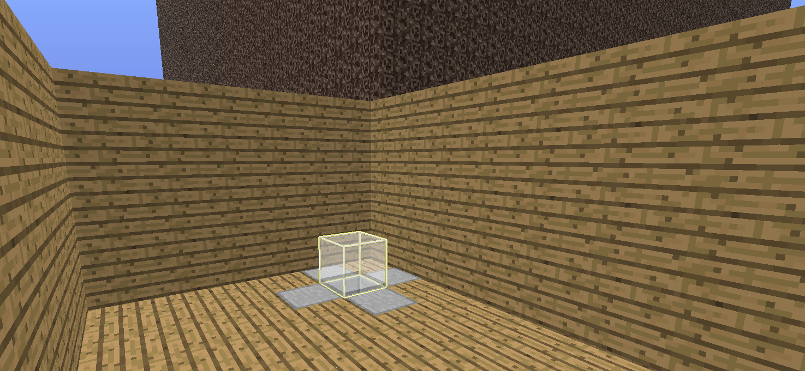
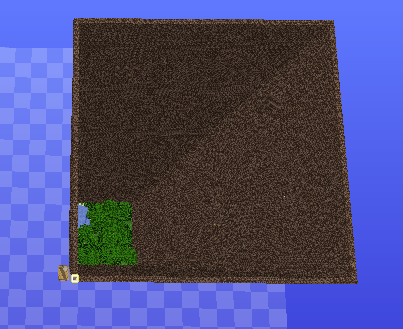
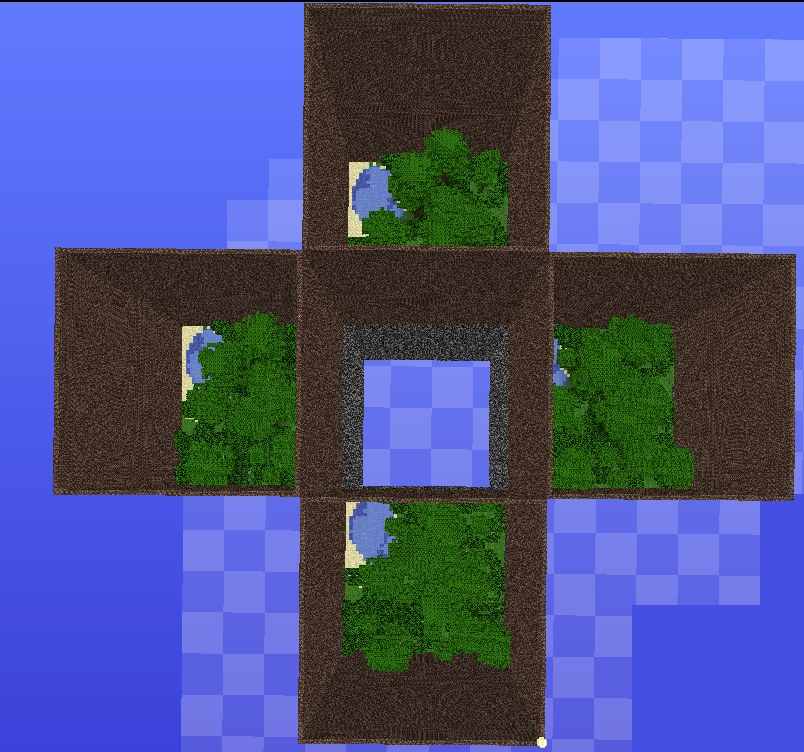
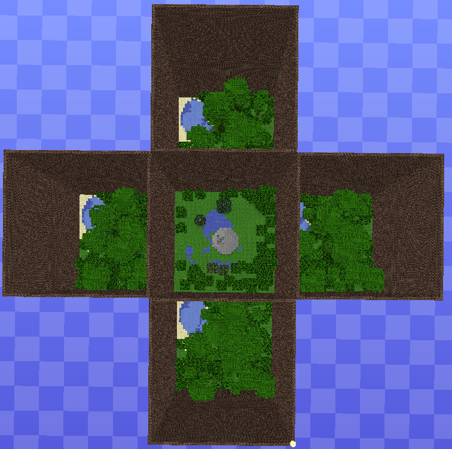

Create an new world. Use either an empty one or an create one with the Generator of this Plugin ( With MultiVerse : /mv create 'WORLDNAME' normal -g WallsPlugin ).
If you wish to use the Client-Mod to create the basic automatic, you'll have to import the Basic arena via MCEdit or WorldEdit.
If you used the Generator you'll see wood where the Winner Lobby belongs, SoulSand where the original Arena belongs, and Stone where the whole Arena will be generated later.
By ScottishJay: http://de.twitch.tv/scottishjay/c/2621560
An example for a Winner-Lobby, the selected block ( yellow-white box ) has the coordinates x:996 y:64 z:996

The default arena piece, selected block (yellow-white box) has the coordinates x:999 and z:999.
At the left bottom you can see the Winner-Lobby. Walls have to be made out of soul sand and as high as possible.
It doesn't have to be a quad, but it must be an rectangle.

After running /wallsBuildArena it looks like this. Selected Block (yellow thingy at the bottom) has the coordinates x:0 and z:0.
This Arena has 4 groups.

After a Center/middle is built it looks like this. Now you just need to set the spawns for each group and the Games can begin.
